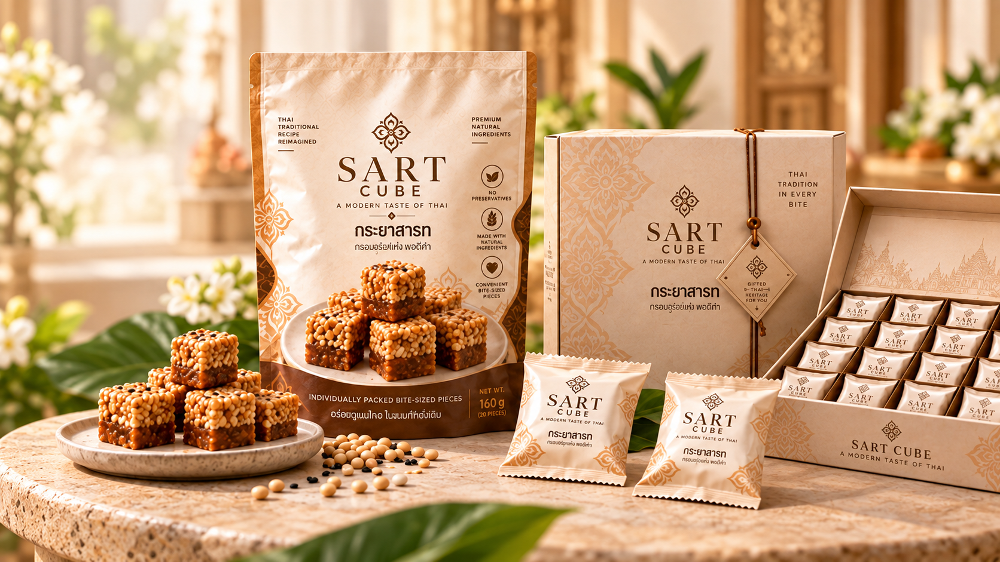

THAI TRADITION. MODERN MOMENTS.
MORE THAN
A SNACK
A SWEETER TOMORROW TOGETHER
SART CUBE reimagines traditional Thai Krayasart in a modern, bite-sized form — bringing the timeless taste of Thai heritage to your everyday life.
Discover SART CUBE